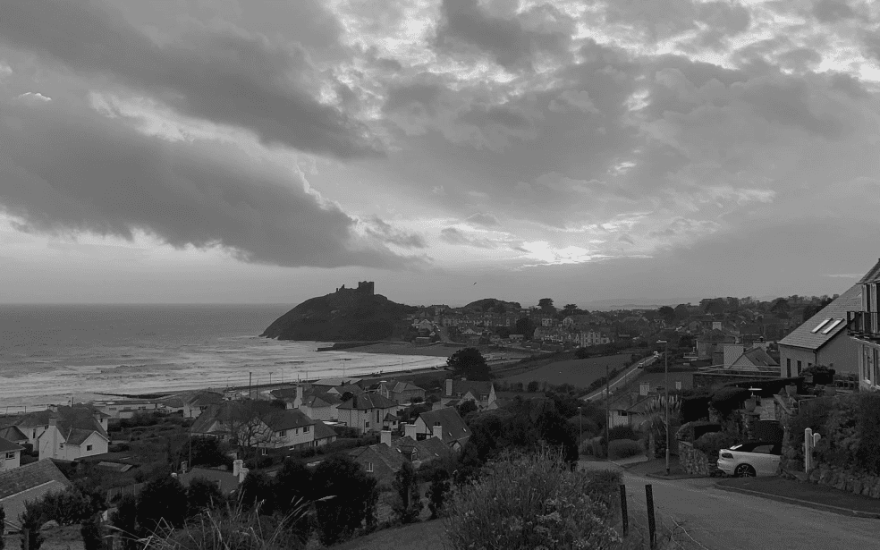
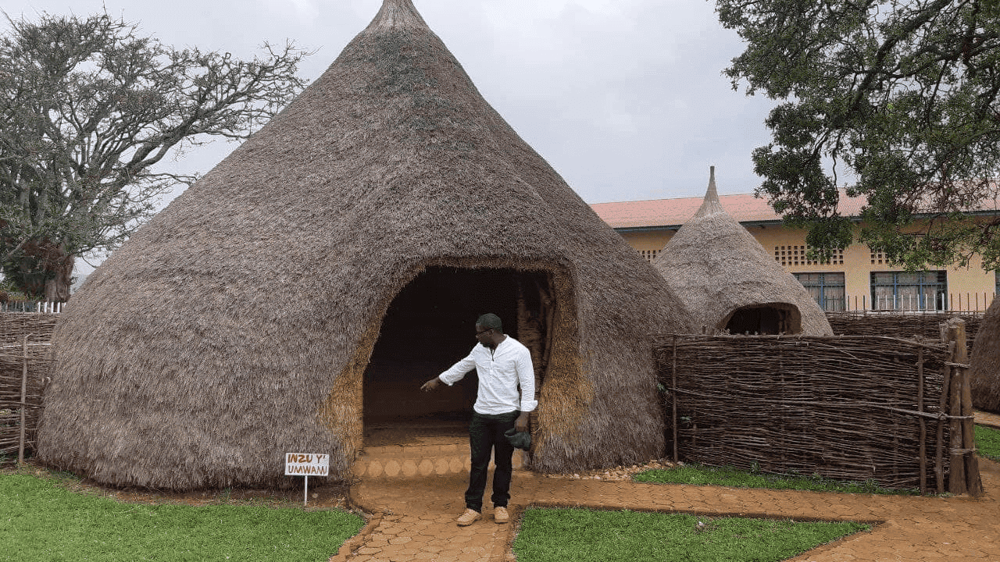
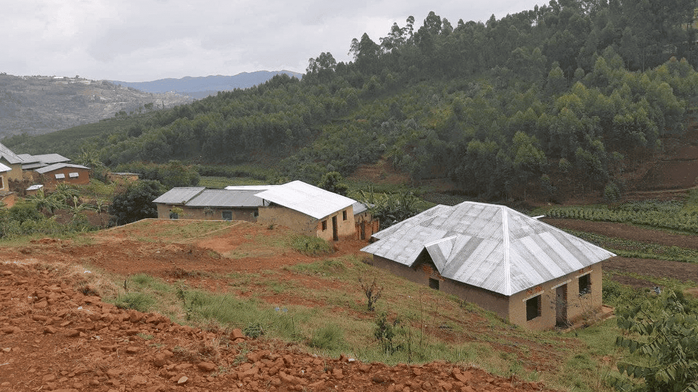
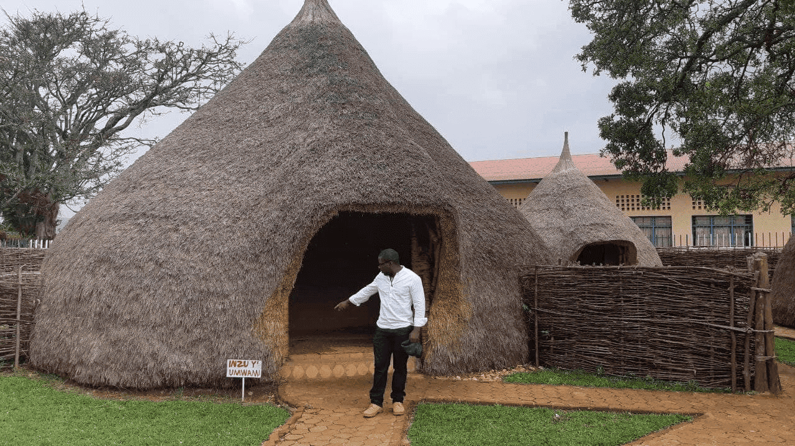
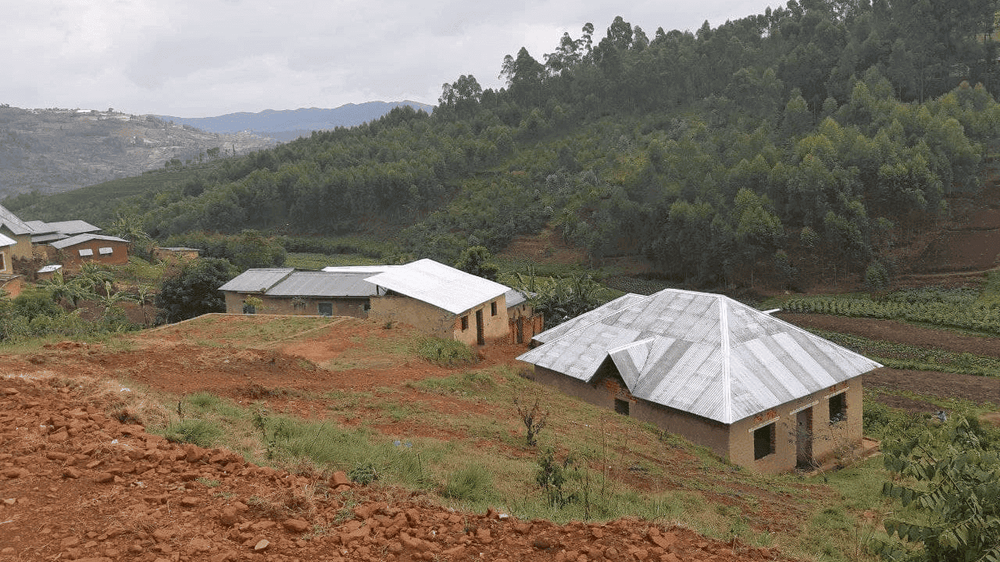

De Pátria para Pátria
Uma jornada épica do Kentucky ao Burundi pelo País de Gales e Ucrânia
Conheça um pouco mais sobre a localização dos seus amigos
Cada pessoa é um artista livre, chamado a transformar as condições, pensamentos e estruturas que moldam nossas vidas.
— Joseph Beuys
A cidade de TripleTen reuniu profissionais de diversos cantos do mundo. Hoje, a Galeria de Arte TripleTen tem o orgulho de apresentar histórias e fotos de algumas das pessoas que dedicam seu tempo e esforço para fazer com que os futuros profissionais de tecnologia desta cidade se sintam em casa. Cada um de nós tem uma história única sobre o lugar de onde viemos. Sinta-se à vontade para adicionar sua própria história e uma obra de arte visual dedicada à sua cidade natal à nossa coleção. Não importa de onde você é, estamos felizes por você ser nosso vizinho.

 



Criccieth, País de Gales
ARTISTAS
Steffan Warren, editor-chefe
Kseniya Gagloeva, gerente de projeto
A ruína medieval do Castelo de Criccieth tem vista para a cidade abaixo de uma rocha que se projeta para o mar. Acredita-se que este castelo foi construído por Llewelyn, o Grande, no século XIII. Cerca de 900 anos depois, a auto-intitulada "Pérola de Gales nas margens de Snowdonia" tornou-se um destino turístico popular durante os meses de verão.
Uma curta caminhada do castelo em direção à cidade pode desfrutar do melhor sorvete do mundo no Cadwalader's, cujos ingredientes incluem algas marinhas, segundo alguns residentes do gênero local. O retorno à cidade também pode incluir uma visita ao prêmio "Wales in Bloom" por seus espaços verdes ou às espetaculares exibições florais de verão. Criccieth também é o lar de David Lloyd George, o único galês a servir como primeiro-ministro do Reino Unido.
Berea, EUA
ARTISTA
Travis Turner, autor e editor
Berea é uma pequena cidade localizada na parte central do Kentucky. A cidade é cercada por belas florestas e campos. É conhecida como a capital do artesanato do estado, e os visitantes encontram várias oportunidades de compras: lojas com bijuterias artesanais, móveis, cerâmica, artigos feitos com madeira e muito mais. A cidade realiza uma feira local que celebra o “pão de colher”, um prato local feito com pão de milho servido com uma colher.
No entanto, provavelmente é mais conhecido pela faculdade local. O Berea College foi fundado em 1855 e foi o primeiro colégio no sul a ser racialmente integrado, bem como o primeiro a ser misto. De forma única, todo estudante que estuda ali não paga mensalidade e recebe uma bolsa de estudos integral.
Muramvya, Burundi
ARTISTA
Grevisse Kenguruka, editor técnico
Muramvya é uma das 18 províncias de Burundi. Durante a época do reino, Muramvya foi sua capital; e em 2017, graças ao seu paisagismo cultural e natural, foi incluída na Lista provisória de patrimônio mundial da UNESCO. Está localizada no centro do país, entre as capitais política e econômica.
Seu clima é mais frio à noite, mas durante o dia, parece o paraíso. A 2.665 metros acima do nível do mar, o Monte Teza é um dos pontos mais altos da província. Essa brisa fresca favorece uma das maiores plantações de chá e café do país, que representam a maior parte das exportações de Burundi.
O Parque Nacional de Kibira, uma das maiores reservas de vida selvagem para símios, ocupa parte de quatro províncias, incluindo Muramvya. Está situado nas montanhas da Divisória Congo-Nilo, com altitudes entre 1.550 e 2.660 metros. É repleto de vegetação exuberante e abastece diversos rios e córregos do país.
São Paulo, Brasil
ARTISTA
Marco Gama, autor e editor
São Paulo é uma cidade que nunca para. Entre arranha-céus, grafites gigantes e cafés escondidos, ela pulsa criatividade e diversidade. Fundada em 1554, hoje é um dos maiores centros culturais da América Latina.
Do MASP flutuante na Avenida Paulista ao Parque Ibirapuera com suas curvas modernistas, a cidade mistura arte, natureza e história em cada esquina. E se bater a fome? Tem pastel na feira, ramen na Liberdade, pizza no Bixiga e café coado em qualquer padaria de bairro.
São Paulo é feita de encontros de sotaques, estilos e sonhos. E mesmo no caos, ela sempre tem espaço pra mais um.